Étude de cas
L'Heure Bleue sur le Nil.
Cas fictif · Non affilié à Hermès
Concept
Le Lotus Bleu.
Convaincue qu'il existe toujours deux versions d'une même chose, j'ai choisi d'explorer l'idée d'une version nocturne du parfum Un Jardin sur le Nil.
Cette édition limitée repose sur l'intégration du Lotus Bleu. J'ai choisi cet ingrédient car c'est une fleur qui s'épanouit exclusivement à la nuit tombée. Cette caractéristique botanique offre une résonance naturelle et factuelle avec le concept d'un jardin nocturne.
Campagne
L'Heure Bleue.
Pour porter ce projet, j'ai imaginé une campagne autour de L'Heure Bleue sur le Nil. L'heure bleue correspond à ce court instant entre le coucher du soleil et la nuit noire, où le ciel prend une teinte azur profonde et où la lumière devient diffuse, transformant radicalement la perception du paysage égyptien.
Photo du Nil — Yann Arthus-Bertrand
Moodboard
L'univers visuel.
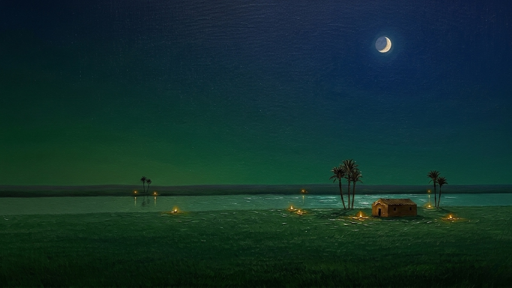
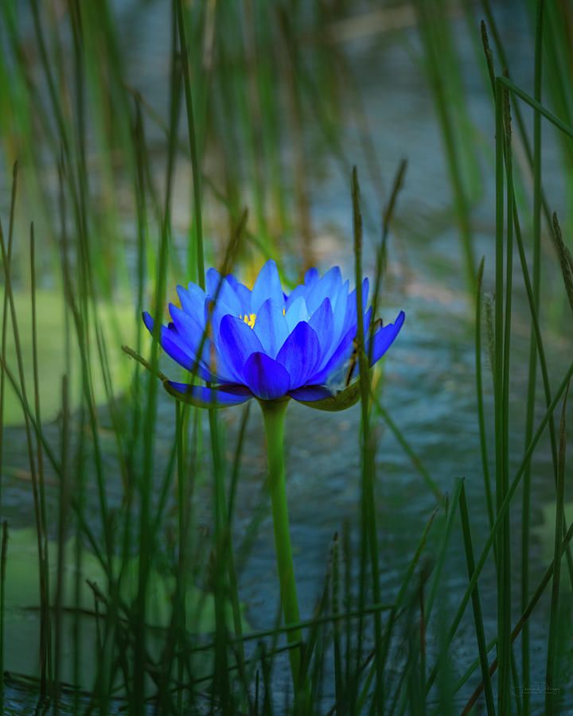
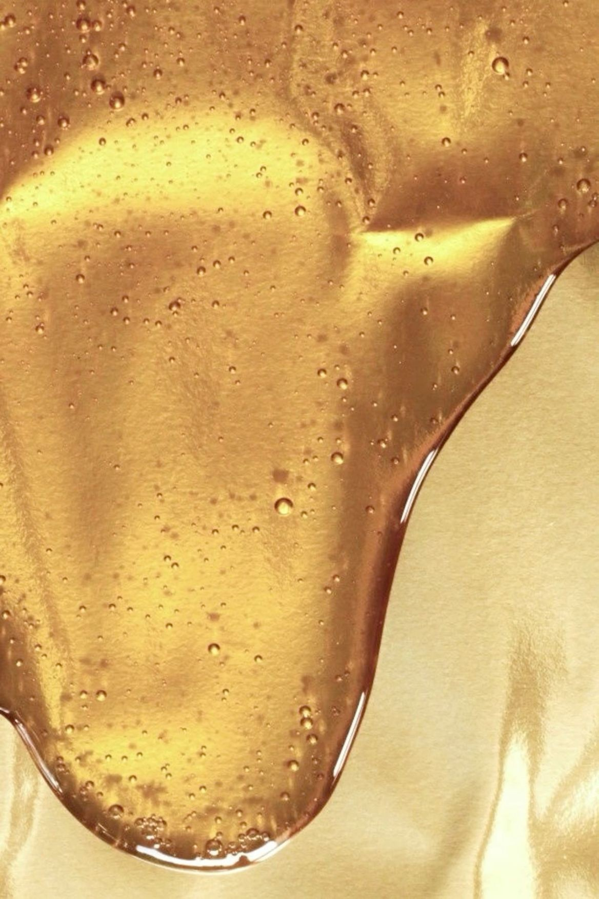
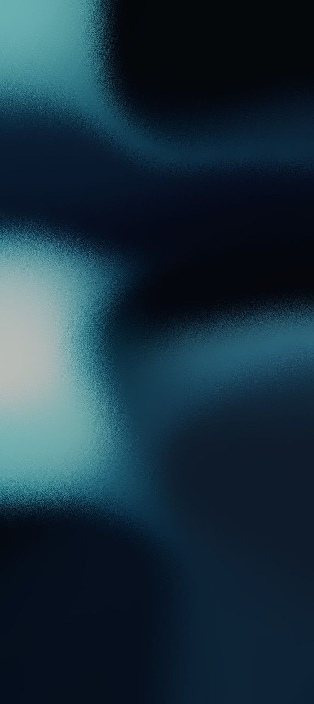
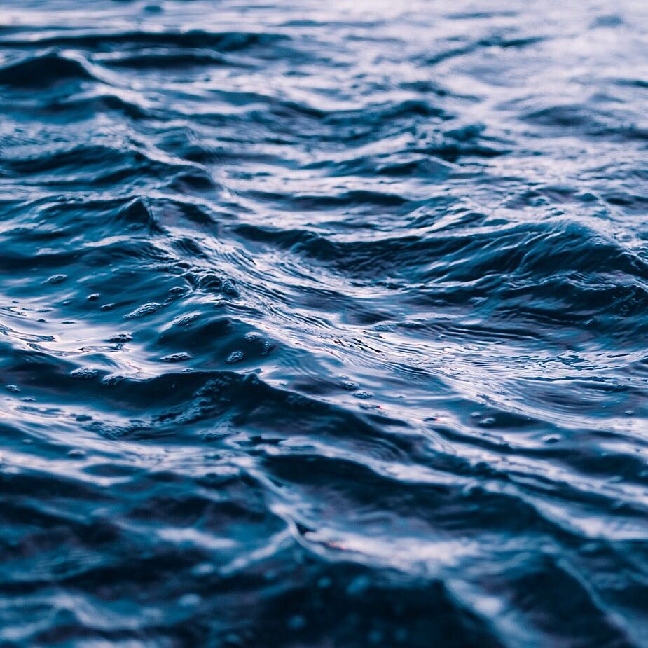
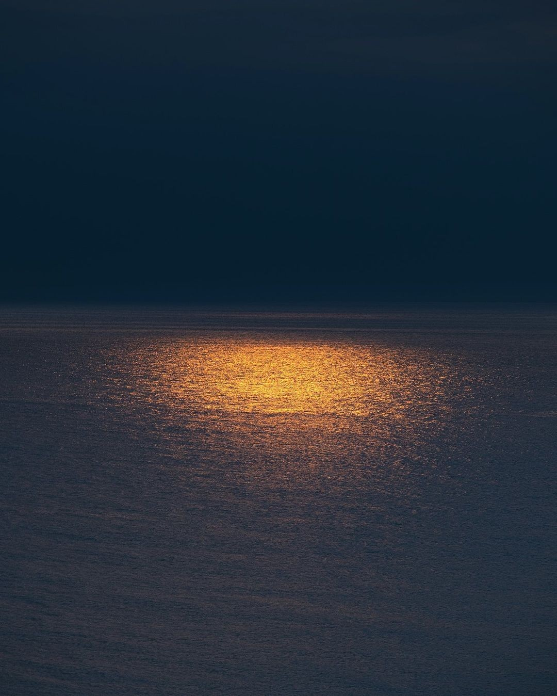
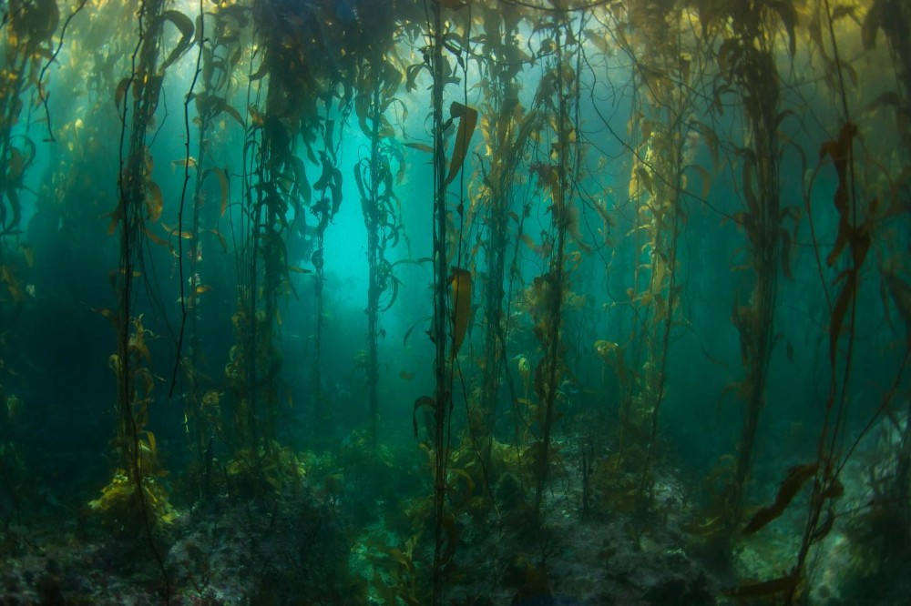
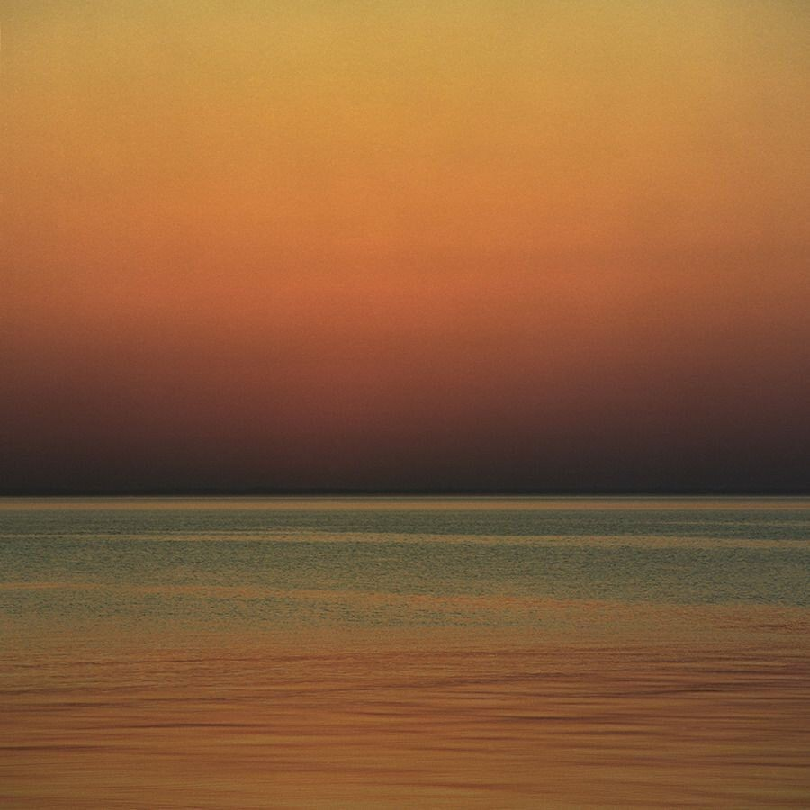

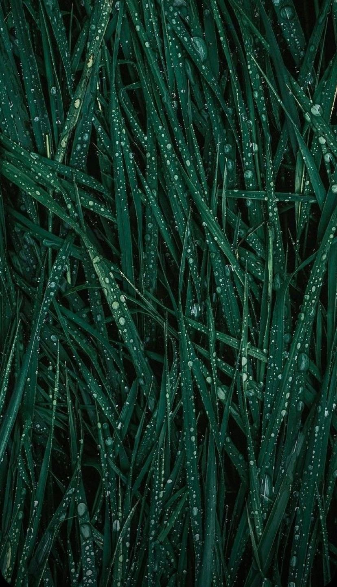
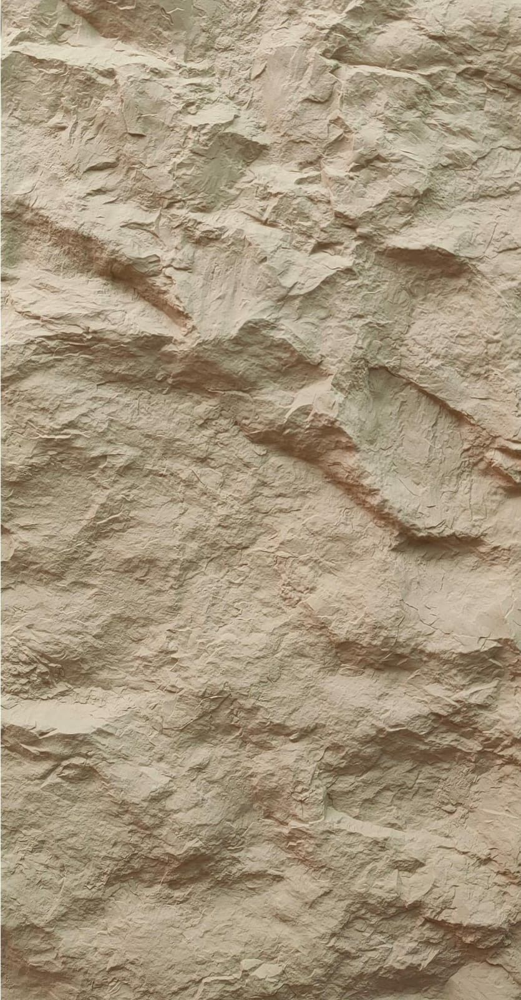
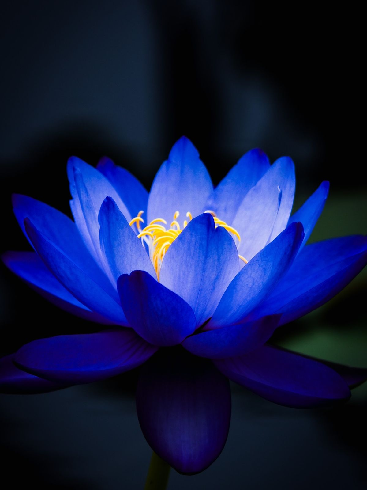
Charte graphique
Charte graphique.
Palette
Typographie
Titre principal
Un Jardin sur le Nil
Mention édition
Le Nil de Minuit — édition limitée
Corps de texte
Notes de tête, de cœur, de fond. La nuit du Lotus Bleu s'écrit en trois temps.
Brand content
Direction visuelle.
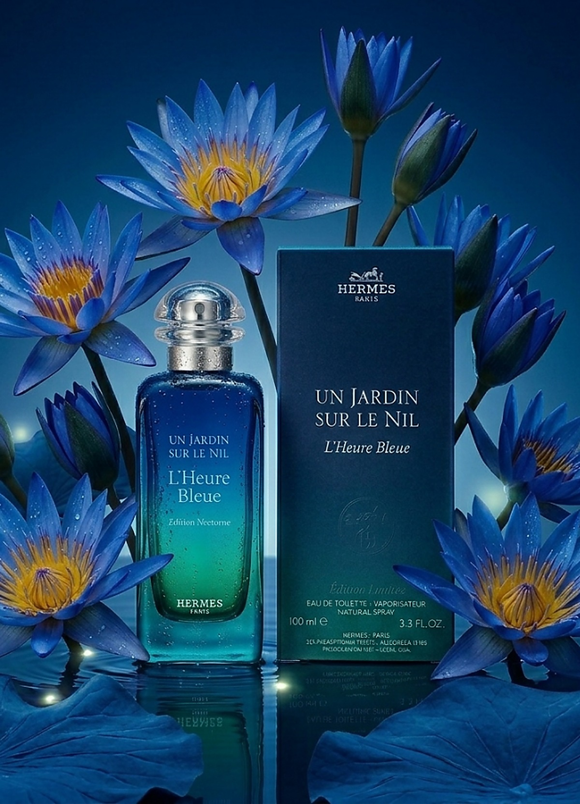
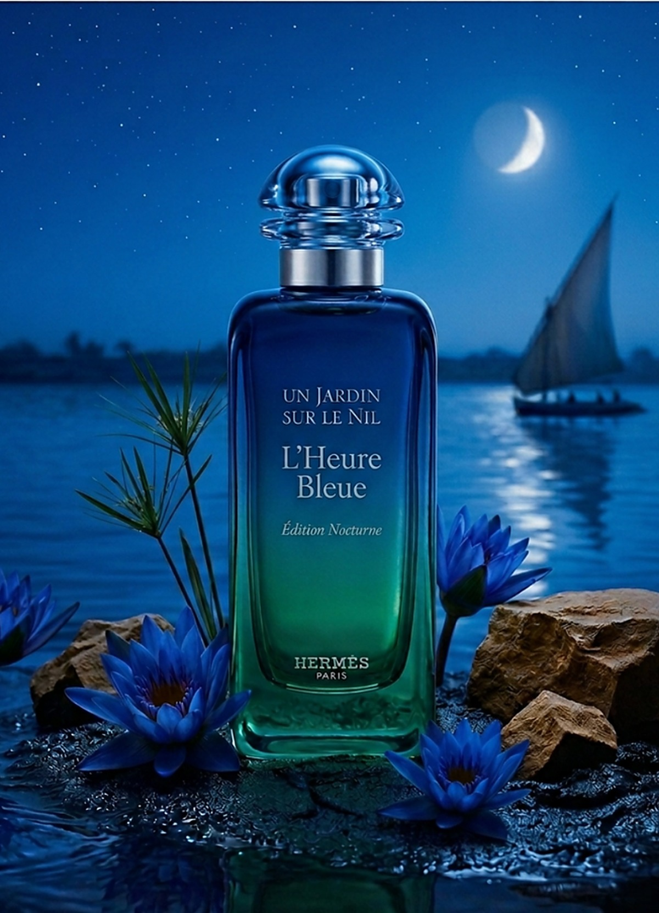
La suite ne s'écrit qu'à deux.